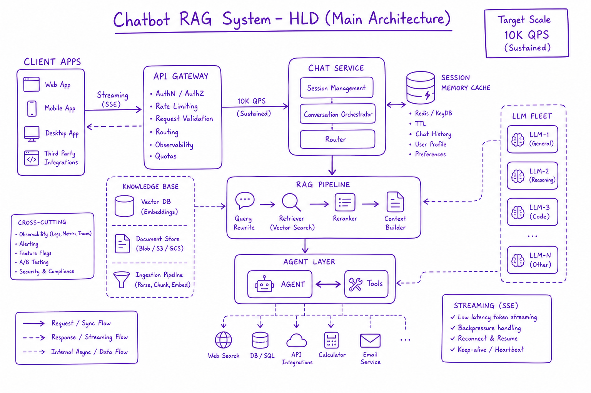
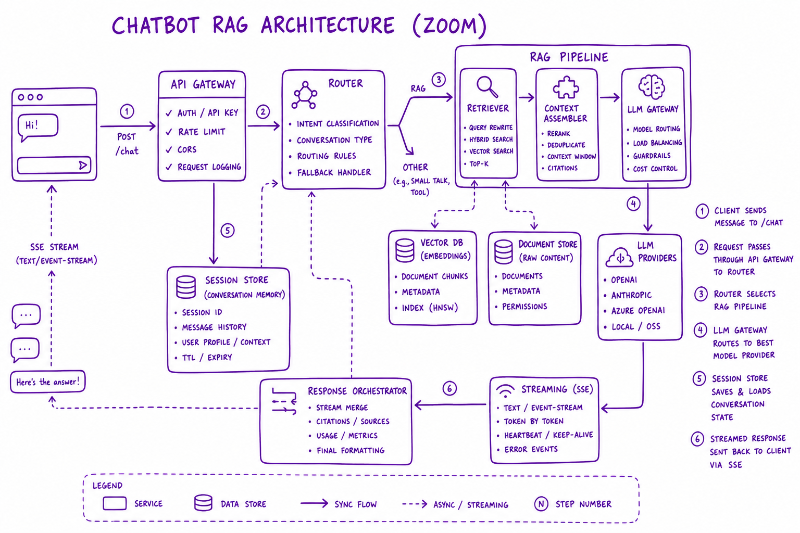
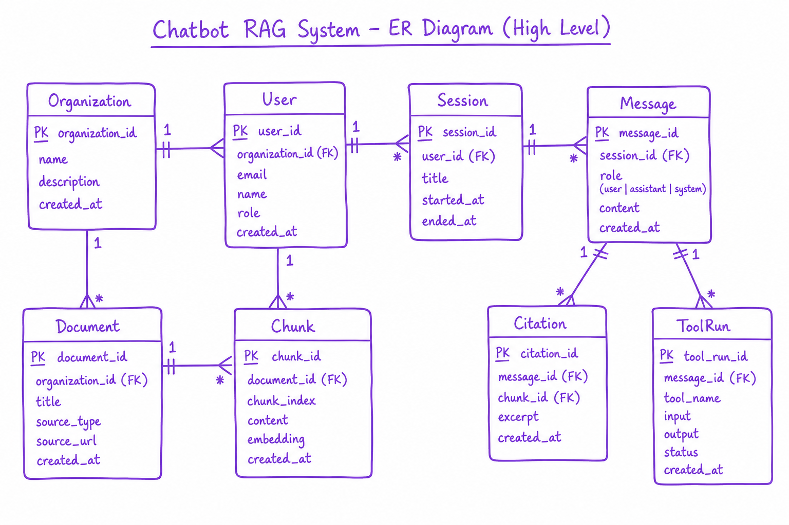

Chatbot with RAG (System Design) // Systems
Full system design: enterprise chatbot with RAG, conversation memory, semantic cache, agent tools, and HITL. The canonical 45-minute AI system design interview.

Chatbot RAG system HLD: client apps → API gateway → chat service (session, memory, cache) → RAG pipeline → optional agent tools → LLM fleet with streaming SSE responses.
01 — What & Why
Functional Requirements
- Multi-turn chat with conversation history
- Answer from private enterprise knowledge base with citations
- Execute actions (create ticket, search CRM) via agent tools
- Stream responses token-by-token
- Admin: ingest docs, view analytics, configure bot persona
Non-Functional Requirements
- 10K QPS peak; p99 first token <500ms
- Multi-tenant isolation (org_id, ACL)
- 99.9% availability
- GDPR: delete user data within 30 days
- Cost budget: <$0.05 per query average
01a — Core Concepts
| Term | Definition | Gotcha |
|---|---|---|
| Session | Conversation thread with message history | Unbounded history exceeds context |
| Router | Classifies simple FAQ vs RAG vs agent path | Wrong route wastes cost or misses tools |
| Grounding | Answer constrained to retrieved docs | Need eval not just prompt |
01b — API & Entities
POST /v1/chat/sessions { org_id, user_id } -> { session_id }
POST /v1/chat/sessions/{id}/messages
{ content, stream: true } -> SSE tokens + citations event
GET /v1/chat/sessions/{id}/messages -> history
POST /v1/documents (ingest) -> 202 job_id
Entities: Organization, User, Session, Message, Document, Chunk,
Citation, ToolRun, CacheEntry, Feedback02 — When to Use / When NOT
| Component | Include When | Defer When |
|---|---|---|
| RAG | Private knowledge required | General chit-chat only |
| Agent tools | User expects actions | Read-only FAQ |
| Semantic cache | High repeat query rate | Unique queries every time |
03 — Architecture
Clients -> CDN/API GW -> Chat Service -> Query Router -> [Cache hit] | [RAG path] | [Agent path] RAG: embed -> hybrid retrieve -> rerank -> LLM stream Agent: tool loop with HITL on writes Session store (Redis) + Memory (vector) + Postgres metadata

Detailed chat service components: router, session store, RAG retriever, LLM gateway, streaming SSE
03a — Estimation (1M docs, 10K QPS)
Corpus: 1M docs -> ~10M chunks Storage: ~120GB vectors + 30GB sparse + 5GB metadata 10K QPS: semantic cache 40% hit -> 6K to LLM LLM fleet: vLLM ~200 GPUs or tiered model routing RAG retrieve: 50 ANN shards, rerank bottleneck -> top-20 Cost: cache saves ~40% LLM spend; avg $0.03/query achievable
04 — Core Entities

ER diagram: Organization, User, Session, Message, Document, Chunk, Citation, ToolRun relationships
Session owns Messages. Message has role, content, citations[], tool_runs[]. Document 1:N Chunks. Citation links Message to Chunk with snippet.
05 — Deep Dive: Chat Path
- Auth + rate limit
- Load session history; summarize if >8K tokens
- Semantic cache lookup
- Router: FAQ / RAG / agent
- Stream LLM response via SSE
- Persist message + citations; async feedback
06 — Deep Dive: RAG Integration
See RAG End-to-End. Hybrid retrieve top-50, rerank top-5, inject numbered passages, generate with [1][2] citations. Refuse if max rerank score below threshold.
07 — Deep Dive: Session Memory
Redis session buffer. Rolling summary over 8K tokens. Long-term vector memory for user prefs (Agent Memory).
08 — Deep Dive: Agent Tools
Optional agent path for ticket creation, CRM lookup. HITL on writes (Production Agent). Max 8 tool calls.
09 — Production & Ops
- Eval harness CI gate on every deploy
- Tracing: cache/RAG/agent/LLM spans
- Moderation on input and output
- Per-org usage billing dashboard
10 — Where It Shows Up
11 — Common Pitfalls
- No query router — every query hits expensive RAG
- Session history unbounded
- Missing citation verification
- No tenant isolation on cache and retrieval